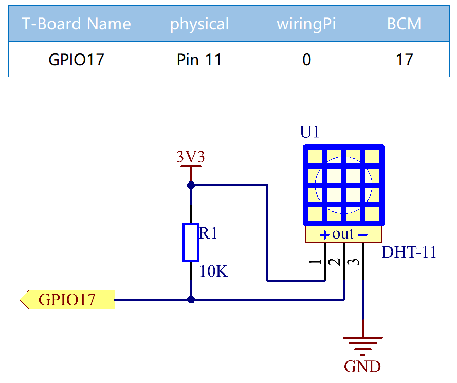

注釈
こんにちは、SunFounderのRaspberry Pi & Arduino & ESP32愛好家コミュニティへようこそ！Facebook上でRaspberry Pi、Arduino、ESP32についてもっと深く掘り下げ、他の愛好家と交流しましょう。
参加する理由は？
エキスパートサポート：コミュニティやチームの助けを借りて、販売後の問題や技術的な課題を解決します。
学び＆共有：ヒントやチュートリアルを交換してスキルを向上させましょう。
独占的なプレビュー：新製品の発表や先行プレビューに早期アクセスしましょう。
特別割引：最新製品の独占割引をお楽しみください。
祭りのプロモーションとギフト：ギフトや祝日のプロモーションに参加しましょう。
👉 私たちと一緒に探索し、創造する準備はできていますか？[ここ]をクリックして今すぐ参加しましょう！
2.2.3 DHT-11
前書き
デジタル温湿度センサーDHT11は、温度と湿度の校正済みデジタル信号出力を含む複合センサーである。専用のデジタルモジュールコレクションの技術と温湿度検知の技術を適用して、製品の高い信頼性と優れた安定性を確保している。
センサーには、湿式素子抵抗センサーとNTC温度センサーが含まれており、高性能の8ビットマイクロコントローラーに接続されている。
部品

原理
DHT11は基本的な超低コストのデジタル温湿度センサーである。 容量性湿度センサーとサーミスタを使用して周囲の空気を測定し、 データピンにデジタル信号を出力する（アナログ入力ピンは不要）。

VCC、GND、とDATAの三つのピンのみが利用できる。 通信プロセスは開始信号をDHT11に送信するDATAラインから始まり、 DHT11は信号を受信して応答信号を返す。次に、ホストは応答信号を受信し、 40ビットの湿度データ（8ビット湿度整数+ 8ビット湿度10進数+ 8ビット温度整数+ 8ビット温度10進数+ 8ビットチェックサム）の受信を開始する。 詳細については、DHT11データシートを参照してください。
回路図
実験手順
ステップ1： 回路を作る。

C言語ユーザー向け
ステップ2： コードのフォルダーに入る。
cd ~/davinci-kit-for-raspberry-pi/c/2.2.3/
ステップ3： コードをコンパイルする。
gcc 2.2.3_DHT.c -lwiringPi
ステップ4： EXEファイルを実行する。
sudo ./a.out
コードの実行後、プログラムはDHT11によって検出された温度と湿度をコンピューター画面にプリントする。
コード
#include <wiringPi.h>
#include <stdio.h>
#include <stdlib.h>
#include <stdint.h>
#define MAXTIMINGS 85 // Maximum number of timing transitions
int dht11_dat[5] = {0, 0, 0, 0, 0}; // Data array to hold sensor values
// Function to read data from DHT11 sensor
void read_dht11_dat(int GPIOPIN)
{
uint8_t currState;
uint8_t laststate = HIGH;
uint8_t counter = 0;
uint8_t j = 0;
uint8_t i;
float f; // Temperature in Fahrenheit
// Reset data array before each read
dht11_dat[0] = dht11_dat[1] = dht11_dat[2] = dht11_dat[3] = dht11_dat[4] = 0;
// Pull pin down for 18 milliseconds to initiate communication
pinMode(GPIOPIN, OUTPUT);
digitalWrite(GPIOPIN, LOW);
delay(18);
// Then pull it up for 40 microseconds
digitalWrite(GPIOPIN, HIGH);
delayMicroseconds(40);
// Prepare to read the pin
pinMode(GPIOPIN, INPUT);
// Detect change and read data
for (i = 0; i < MAXTIMINGS; i++)
{
counter = 0;
// Count how long each state lasts
while (digitalRead(GPIOPIN) == laststate)
{
counter++;
delayMicroseconds(2);
if (counter == 255)
{
break;
}
}
// Save the current state
laststate = digitalRead(GPIOPIN);
if (counter == 255) break;
// Ignore first 3 transitions (DHT11 response signal)
if ((i >= 4) && (i % 2 == 0))
{
// Shift bits and store data
dht11_dat[j/8] <<= 1;
if (counter > 16)
{
dht11_dat[j/8] |= 1;
}
j++;
}
}
// Check if we received 40 bits (5 bytes) and verify checksum
if ((j >= 40) && (dht11_dat[4] == ((dht11_dat[0] + dht11_dat[1] + dht11_dat[2] + dht11_dat[3]) & 0xFF)) )
{
// Convert temperature to Fahrenheit
f = dht11_dat[2] * 9.0 / 5.0 + 32;
printf("Humidity = %d.%d %% Temperature = %d.%d °C (%.1f °F)\n",
dht11_dat[0], dht11_dat[1], dht11_dat[2], dht11_dat[3], f);
}
else
{
printf("Data not good, skip\n");
}
}
int main (void)
{
printf("Raspberry Pi wiringPi DHT11 Temperature test program\n");
// Initialize wiringPi using BCM GPIO pin numbering
if (wiringPiSetupGpio() == -1)
{
exit(1);
}
while(1)
{
// Read data from DHT11 connected to GPIO pin 17
read_dht11_dat(17);
delay(1000); // Wait 1 second before next read
}
return 0;
}
コード説明
ヘッダーのインクルード: コードには、wiringPi関数と標準入出力に必要なヘッダーが含まれています。
#include <wiringPi.h> #include <stdio.h> #include <stdlib.h> #include <stdint.h>
定義：
MAXTIMINGS： DHT11 センサーから予期される最大タイミング遷移数（85）。
#define MAXTIMINGS 85 // Maximum number of timing transitions
グローバルデータ配列：
dht11_dat[5]： DHT11 センサーから受信した 5 バイトのデータを格納する配列。
int dht11_dat[5] = {0, 0, 0, 0, 0}; // Data array to hold sensor values
関数
read_dht11_dat(int GPIOPIN)： 指定した GPIO ピンに接続された DHT11 センサーからデータを読み取ります。初期化： 各読み取り前に
dht11_dat配列をゼロにリセットします。dht11_dat[0] = dht11_dat[1] = dht11_dat[2] = dht11_dat[3] = dht11_dat[4] = 0;
スタート信号： DHT11 にデータ送信を開始するように信号を送るために、GPIO ピンを少なくとも 18 ミリ秒間低にします。
pinMode(GPIOPIN, OUTPUT); digitalWrite(GPIOPIN, LOW); delay(18); // 18 milliseconds
GPIO ピンを 40 マイクロ秒間高にします。
digitalWrite(GPIOPIN, HIGH); delayMicroseconds(40); // 40 microseconds
センサーからのデータを読み取るために GPIO ピンを入力モードに設定します。
pinMode(GPIOPIN, INPUT);
データ読み取りループ：
MAXTIMINGS回までループしてデータビットを読み取ります。各遷移（高から低、または低から高）に対して、ピンが各状態に滞在する時間を測定します。
for (i = 0; i < MAXTIMINGS; i++) { counter = 0; while (digitalRead(GPIOPIN) == laststate) { counter++; delayMicroseconds(2); if (counter == 255) { break; } } laststate = digitalRead(GPIOPIN); // ... rest of the loop }
データビット抽出： 最初の 3 つの遷移は、DHT11 の初期応答の一部であるため無視されます。
各データビットについて、ピンが高状態に滞在する期間に基づいてビットが 0 か 1 かを判定します。
if ((i >= 4) && (i % 2 == 0)) { dht11_dat[j/8] <<= 1; if (counter > 16) { dht11_dat[j/8] |= 1; } j++; }
チェックサム検証： すべてのビットを受信後、データの整合性を保証するためにチェックサムを検証します。
if ((j >= 40) && (dht11_dat[4] == ((dht11_dat[0] + dht11_dat[1] + dht11_dat[2] + dht11_dat[3]) & 0xFF)) )
チェックサムが正しい場合、湿度および温度の値を出力します。
f = dht11_dat[2] * 9.0 / 5.0 + 32; printf("Humidity = %d.%d %% Temperature = %d.%d °C (%.1f °F)\n", dht11_dat[0], dht11_dat[1], dht11_dat[2], dht11_dat[3], f);
チェックサムが一致しない場合、エラーメッセージを出力します。
else { printf("Data not good, skip\n"); }
メイン関数：
スタートメッセージを出力します。
printf("Raspberry Pi wiringPi DHT11 Temperature test program\n");
BCM GPIO ピン番号を使用して WiringPi を初期化します。
if (wiringPiSetupGpio() == -1) { exit(1); }
DHT11 センサーから毎秒データを読み取る無限ループに入ります。
while(1) { read_dht11_dat(17); delay(1000); // wait 1 second }
Python言語ユーザー向け
ステップ2： コードのフォルダーに入る。
cd ~/davinci-kit-for-raspberry-pi/python/
ステップ3： EXEファイルを実行する。
sudo python3 2.2.3_DHT.py
コードの実行後、プログラムはDHT11によって検出された温度と湿度をコンピューター画面にプリントする。
コード
注釈
以下のコードを 変更/リセット/コピー/実行/停止 できます。 ただし、その前に、 davinci-kit-for-raspberry-pi/python のようなソースコードパスに移動する必要があります。
from gpiozero import OutputDevice, InputDevice
import time
class DHT11():
MAX_DELAY_COUINT = 100
BIT_1_DELAY_COUNT = 10
BITS_LEN = 40
def __init__(self, pin, pull_up=False):
self._pin = pin
self._pull_up = pull_up
def read_data(self):
bit_count = 0
delay_count = 0
bits = ""
# -------------- send start --------------
gpio = OutputDevice(self._pin)
gpio.off()
time.sleep(0.02)
gpio.close()
gpio = InputDevice(self._pin, pull_up=self._pull_up)
# -------------- wait response --------------
while gpio.value == 1:
pass
# -------------- read data --------------
while bit_count < self.BITS_LEN:
while gpio.value == 0:
pass
# st = time.time()
while gpio.value == 1:
delay_count += 1
# break
if delay_count > self.MAX_DELAY_COUINT:
break
if delay_count > self.BIT_1_DELAY_COUNT:
bits += "1"
else:
bits += "0"
delay_count = 0
bit_count += 1
# -------------- verify --------------
humidity_integer = int(bits[0:8], 2)
humidity_decimal = int(bits[8:16], 2)
temperature_integer = int(bits[16:24], 2)
temperature_decimal = int(bits[24:32], 2)
check_sum = int(bits[32:40], 2)
_sum = humidity_integer + humidity_decimal + temperature_integer + temperature_decimal
if check_sum != _sum:
humidity = 0.0
temperature = 0.0
else:
humidity = float(f'{humidity_integer}.{humidity_decimal}')
temperature = float(f'{temperature_integer}.{temperature_decimal}')
# -------------- return --------------
return humidity, temperature
if __name__ == '__main__':
dht11 = DHT11(17)
while True:
humidity, temperature = dht11.read_data()
print(f"{time.time():.3f} temperature:{temperature}°C humidity: {humidity}%")
time.sleep(2)
コードの説明
def read_data(self):
bit_count = 0
delay_count = 0
bits = ""
# -------------- send start --------------
gpio = OutputDevice(self._pin)
gpio.off()
time.sleep(0.02)
gpio.close()
gpio = InputDevice(self._pin, pull_up=self._pull_up)
#...
この関数はDHT11の関数を実装するために使用される。それは検出されたデータを bits[] 配列に保存する。
DHT11は一度に40ビットのデータを点灯する。
最初の16ビットは湿度に関連し、中央の16ビットは温度に関連し、最後の8ビットは検証に使用される。
データ形式は次のとおりである：
8ビット湿度整数データ +8ビット湿度10進データ +8ビット温度整数データ + 8ビット温度10進データ + 8ビットチェックビット。
チェックビットを介して有効性が検出されると、関数は2つの結果を返す：1. エラー; 2.湿度と温度。
_sum = humidity_integer + humidity_decimal + temperature_integer + temperature_decimal
if check_sum != _sum:
humidity = 0.0
temperature = 0.0
else:
humidity = float(f'{humidity_integer}.{humidity_decimal}')
temperature = float(f'{temperature_integer}.{temperature_decimal}')
たとえば、受信した日付が00101011（湿度整数の8ビット値）00000000（湿度10進数の8ビット値）00111100（温度整数の8ビット値）00000000（温度10進数の8ビット値）01100111（チェックビット）の場合
計算:
00101011+00000000+00111100+00000000=01100111.
最終結果がチェックビットデータと等しい場合、データ送信は異常である：Falseを返す。
最終結果がチェックビットデータと等しく、受信データは正しい場合、
humidity と temperature が返され、「Humidity = 43％、Temperature= 60C」が出力される。